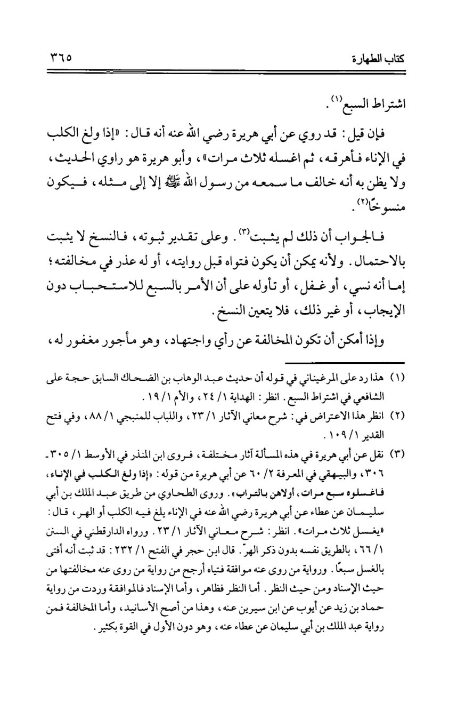
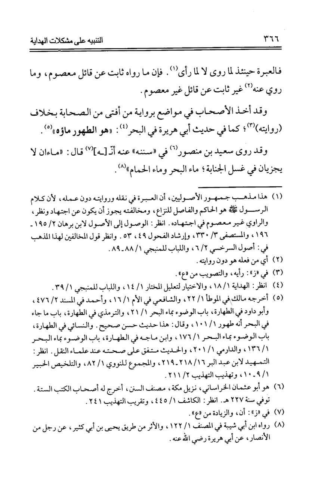
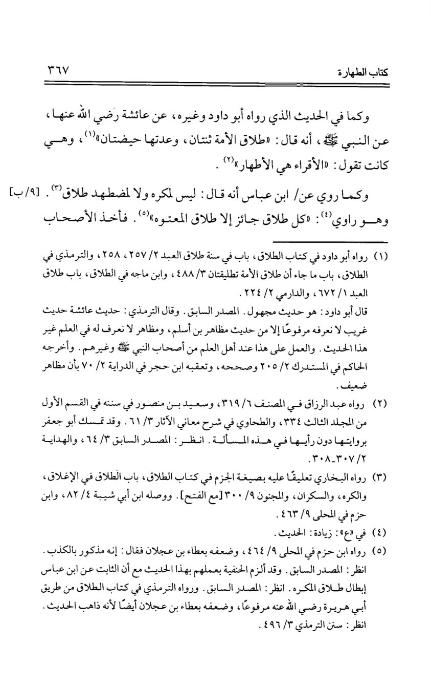
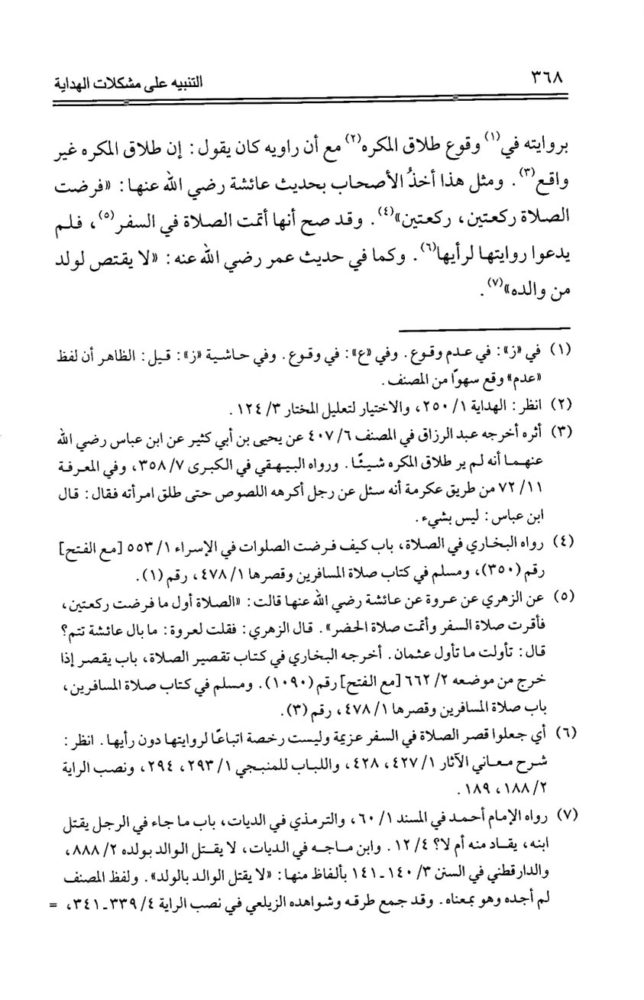
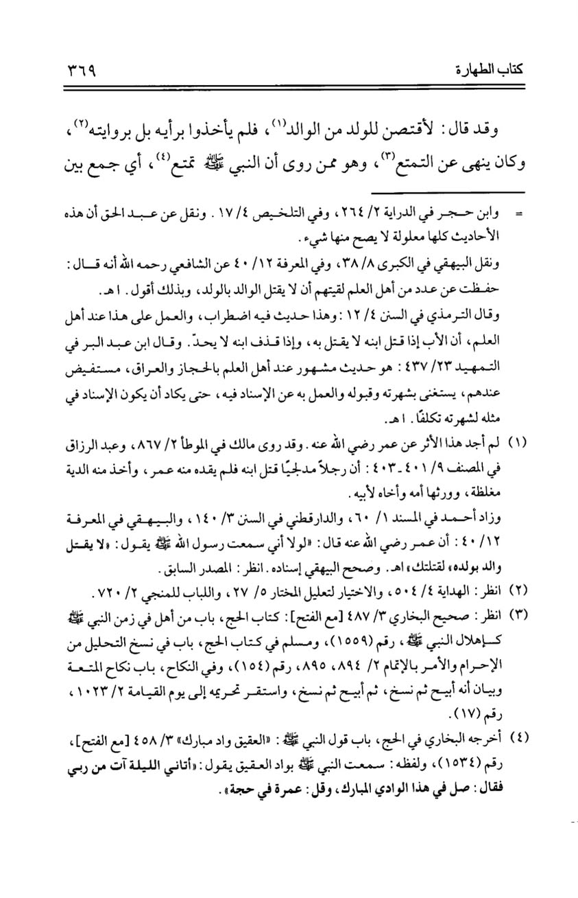
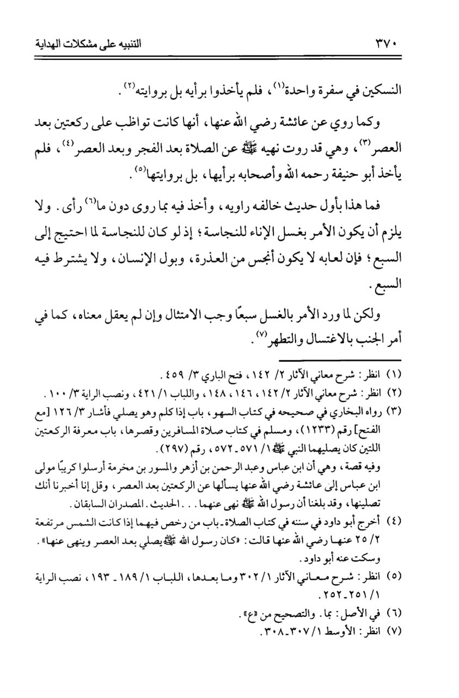

যে উসূল পূণঃনিরীক্ষণের দাবি রাখে
১৪ এপ্রিল, ২০২৪
যে উসূল পূণঃনিরীক্ষণের দাবি রাখে—
‘রাবি যদি তার বর্ণনার খেলাফ আমল করেন, তবে কি সেই বর্ণনা দুর্বল বা অগ্রহণযোগ্য হয়ে পড়ে।’
তারাবি' বিতর্কে এ কথাটি নিশ্চয়ই শুনে থাকবেন যে, ইমাম মালিক রাহ. ১১ রাকাতের বর্ণনা করলেও তিনি ১১ রাকাতের উপর আমল করতেন না; যে কারণে হাদিসটি দুর্বল বা গ্রহণযোগ্য(!)
মূলত, এটি হানাফিদের উসূল। তারা বলেন, রাবি তার বর্ণনার খেলাফ আমল করলে তার সে বর্ণনা মানসুখ বিবেচিত হয়। পক্ষান্তরে ইমাম আহমদ, শাফিই, জুমহুর মুহাদ্দিস ও উসূলবিদের মতে ‘রাবির ব্যক্তিগত রায় বিবেচ্য নয়; দলিল হল তিনি যা বর্ণনা করেছেন তা।’
বিখ্যাত হানাফি ফকিহ, উসূলি আবুল হাসান কারখি, ইবনু আবিল ইজ্জ হানাফি ও একদল মুহাক্কিক হানাফি ইমাম উক্ত উসূলকে দুর্বল মনে করেন এবং তারা জুমহুরের সঙ্গে একাত্মতা পোষণ করেন। ইবনু আবিল ইজ্জ রাহ. দেখিয়েছেন যে, খুদ হানাফি উলামা হযরাত উক্ত উসূলের তোয়াক্কা করেন নাই; অনেক ক্ষেত্রে তারা রাবির ব্যক্তিগত ফতোয়া/আমল প্রত্যাখ্যান করে তার বর্ণনাকে দলিল মেনেছেন। যেমন—
★ সমুদ্রের পানি পবিত্র হওয়ার ব্যাপারে আবু হুরায়রা রা-এর অভিমত ত্যাগ করে তাঁর বর্ণিত হাদিস মেনেছেন।
★ ‘কুরু’ এর ব্যাপারে আয়িশা রা-এর অভিমত ত্যাগ করে তার বর্ণিত হাদিস গ্রহণ করেছেন।
★ ‘মুকরাহ’ বা বলপ্রয়োগকৃত ব্যক্তির তালাকের ব্যাপারে ইবনু আব্বাসা রা-এর রায় পরিহার করে তাঁর বর্ণিত হাদিস গ্রহণ করেছেন।
★ মুসাফিরের সালাত কসর করার ব্যাপারে আয়িশা রা-এর আমল পরিহার করে তাঁর বর্ণিত হাদিস হুজ্জত মেনেছেন।
★ পিতা পুত্রকে হত্যা করলে কেসাস গ্রহণ না করার ক্ষেত্রে উমর রা-এর রায় ত্যাগ করে তাঁর বর্ণিত হাদিস দলিল বানিয়েছেন।
★ হজ্জে তামাত্তু করার ক্ষেত্রে উমরের নিষেধাজ্ঞা গ্রহণ না করে তাঁর বর্ণিত হাদিস গ্রহণ করেছেন।
★ আয়িশা রা. আসর শেষে সর্বদা দুই রাকাআত নামাজ আদায় করতেন। অথচ, হানাফি কোনো ইমাম তার আমল গ্রহণ করেন নাই; বরং রাসূল সা. থেকে আসর ও ফজরের পর তার বর্ণিত নিষেধাজ্ঞাপূর্ণ হাদিসের উমর আমল করেছেন।
এছাড়াও অন্যান্য অনেক ক্ষেত্রে হানাফিগন রাবির ব্যক্তিগত ফতোয়া/আমল গ্রহণ না করে তার রেওয়ায়াত গ্রহণ করেছেন।
(বিস্তারিত: আত-তাম্বিহ আলা মুশকিলাতিল হেদায়াহ, ১ম খণ্ড, ৩৬৫-৩৭০)
সুতরাং, উক্ত উসূল— যে উসূলের উপর খুদ হানাফি ইমামগনের পরিপূর্ণ আমল নেই— তা দিয়ে ‘ইমাম মালিক ১১ রাকাত আমল করেন নাই বিধায় ১১ রাকাতের হাদিস দুর্বল’ দাবি করা চরম হাস্যকর ও উসূলের ব্যাপারে অজ্ঞতার পরিচয়।
(কিতাবের স্ক্রিনশট যুক্ত করা হল।)





